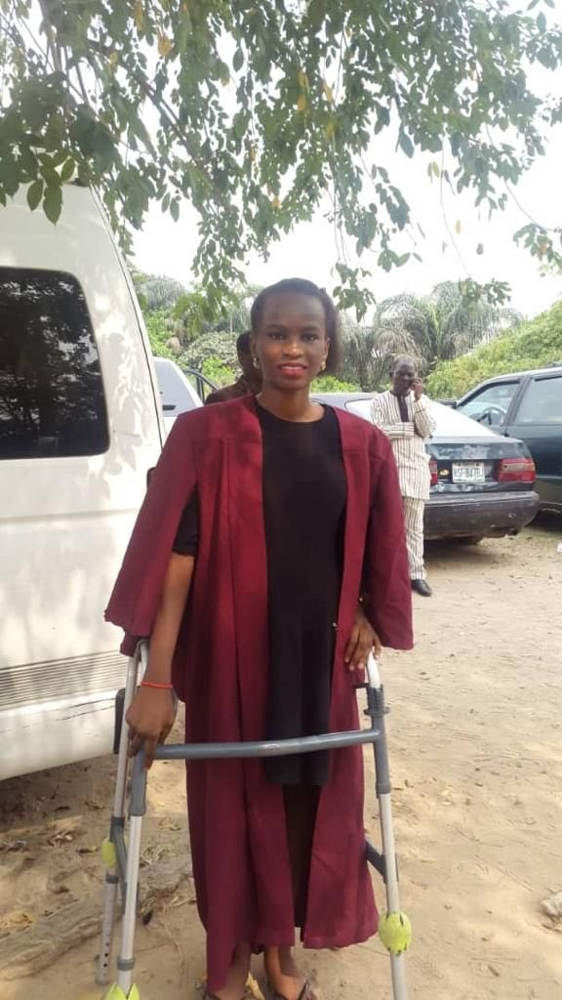

Joy one of the graduating student in the ongoing 52nd convocation has recounted through the microblogginh platform Twitter on how she got admissinn into Unilag with walking aids as a result of a sickle cell complication and graduated without without longing to use them.
Joy fro who still graduated with first class narrates how she walks in pain and in shame.
Her words;
Entering Unilag with 6 Legs and Graduating with my 2 Legs will forever be a Testimony to me and my family…. I got admission into Unilag when I had a Sickle Cell complication- Avascular Necrosis of the hipbone. My doctors said I could never walk on my own until I have a hip replacement surgery on both hips. Hence they moved me from using crutches to using a walking frame. Throughout my 100level, I would walk to class and lab practicals with the walking frame, in pain and in shame. I can’t even take a cab because the frame was heavy and the cab men dint have the patience to wait for the process of folding it… etc It took a toll on me socially, mentally and physically. Other students would stare at me on the road. Some got close to offer help, and even became friends in the long run. Some just stared and walked past. It was a struggle. Battling with sickle cell and having to study in Unilag was an extreme sport. The constant stress had a huge effect on my health. It was so bad that I had to change my course of study in my second year to a less stressful one I have been in and out of the hospitals so many times for sickle cell crisis. Unilag medical center was almost like my second home at some point. The pain just springs up from nowhere and there were times I had to be rushed at midnight from the hostel to the medical center I remember writing my 100level exams on the hospital bed! Heck I wrote almost every exam at the hospital. Writing lab reports and doing my assignments there sometimes too. I made up my made up my mind to stop using crotches even if it will take me to limp and feel the pain I am thankful for a few of friends and most importantly, my MOM and sisters, who constantly remind me to take care of myself, take my drugs, drink plenty of water, avoid stress and cold. Lol. People always wondered why I carried big handbags everywhere. I couldn’t go anywhere without at least two bottles of water, a jacket and socks. The scars on my body are as a result of allergic reactions to an injection they give me during pain crisis. Imagine having to choose between having a flawless skin or being relieved of pain I am most grateful to almighty God for seeing me through my degree. It could only be him. In all of these, i graduated from the University of Lagos with a FIRST CLASS DEGREE. Abeg Companies, Brands and Multinationals I don’t want to queue oh… I’ve suffered already using those days at the Hospital to even learn Graphics Design. I’ve glowed up and can represent your company and it’s core values. I also took a course in Health Safety and Environment. Yes I am an HSE officer Flexed biceps. Super young and full of life. And I’m open to any scholarship programs if there are recommendations. If I don’t announce my virtual CV who will do it